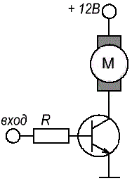
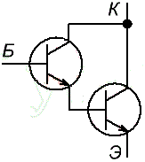
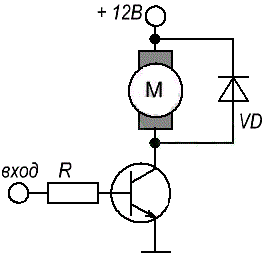
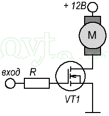
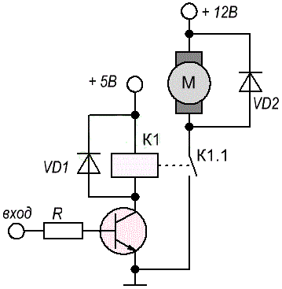
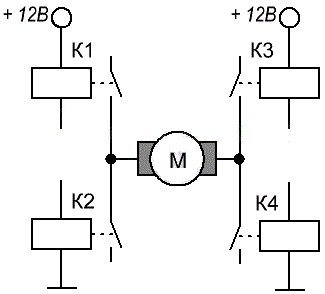
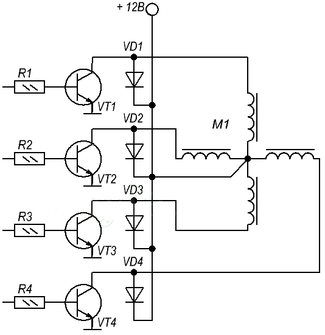

Управление двигателем постоянного тока
Чтобы двигатель постоянного тока начал вращаться, ему необходимо обеспечить нужное количество энергии. Как правило, для маломощных двигателей достаточно несколько ватт. Блок управления (микроконтроллер), который принимает решения о запуске двигателя, не может непосредственно управлять двигателем, то есть обеспечить необходимую мощность со своего вывода. Это связано с тем, что порты микроконтроллера имеют очень ограниченную нагрузочную способность (максимальный ток на выходе микроконтроллера обычно не более 20 мА).
Поэтому нужен усилитель мощности - устройство, которое может на своем выходе генерировать сигнал мощностью большей, чем мощность на его входе. Такими устройствами являются транзистор и реле, которые прекрасно подходят для управления двигателем постоянного тока.
Управление двигателем при помощи биполярного транзистора
Самый простой способ приведения в действие двигателя показан на рис. 1.

Рис. 1 - Схема управления двигателем при помощи биполярного транзистора
Биполярный транзистор используется в качестве переключателя. Резистор R необходимо подобрать таким, чтобы в худшем случае (потенциал базы равен потенциалу эмиттера) через него протекал ток, не превышающий максимальный ток порта микроконтроллера.
Для того чтобы подобрать подходящий транзистор, нам нужно знать максимальный ток во время пуска или остановки двигателя, и ток во время нормальной его работы. Исходя из этого, мы подберем транзистор с соответствующим током коллектора и его максимальное значение.
Следует также обратить внимание на мощность, выделяющуюся на транзисторе (P = Uкэ * Iк). Несмотря на то, что транзистор в данном случае работает в состоянии насыщения и напряжение Uкэ часто не превышает 1В, коллекторный ток все же велик (около 0,5 А для двигателя среднего размера) и, следовательно, мощность, излучаемая на транзисторе может потребовать от нас установки радиатора.
Другой проблемой при применении биполярных транзисторов, может быть, слишком большой ток базы. Соотношение токов выходного сигнала к входному такого транзистора - это чаще всего 100 (это отношение называется коэффициентом усиления по току и обозначается или hfe ). Но, к сожалению, когда транзистор работает в состоянии насыщения, этот коэффициент сильно снижается.
Это приводит к тому, что если мы хотим, чтобы ток коллектора имел большое значение, это может потребовать большего тока, чем 20 мА, то есть больше, чем составляет нагрузочная способность порта микроконтроллера. В таких случаях решением может быть использование комбинации транзисторов – транзистор Дарлингтона (рис. 2).

Рис. 2 - Транзистор Дарлингтона
Такая система ведет себя как один транзистор с большим значением усиления тока и малой скоростью работы.
Несколько слов об индуктивных нагрузках
Поскольку двигатель является индуктивной нагрузкой, мы должны быть осторожны. Если через обмотку течет ток, и мы внезапно остановим этот поток, то на выводах обмотки временно появляется большое напряжение. Это напряжение может привести к повреждению транзистора (в представленной схеме выше) вызывая пробой перехода база-коллектор. Кроме того, это может создавать значительные помехи. Для предотвращения этого необходимо параллельно с индуктивной нагрузкой подключить диод (рис. 3)

Рис. 3 - Подключение защитного диода
Во время нормальной работы двигателя диод смещен в обратном направлении. Отключение питания электродвигателя вызывает нарастание напряжения на катушке, при этом диод будет смещен в прямом направлении, благодаря чему произойдет разряд излишней энергии накопленной в катушке.
Диод следует подобрать такой, чтобы он выдерживал обратное напряжение во время нормальной работы двигателя. Такую защиту можно применять как при использовании биполярных транзисторов, так и MOSFET. Так же рекомендуется использовать диод и в работе с электромагнитным реле, для предотвращения раннего износа контактов.
Управление двигателем при помощи MOSFET транзистора
Так же можно управлять постоянным двигателем с помощью полевого транзистора MOSFET (рис. 4).

Рис. 4 - Схема управления двигателем при помощи MOSFET транзистора
Он должен быть с каналом обогащенного типа. Основным преимуществом такого транзистора является практически отсутствие входного тока. Он имеет небольшое активное сопротивление канала (доли ома), благодаря чему потери мощности в транзисторе не большие. Недостатком является чувствительность к электростатическим разрядам, которые могут вывести транзистор из строя.
Так как ток стока может достигать (для среднего транзистора) десятков ампер и, имея практически нулевой входной ток, MOSFET транзисторы отлично подходят в качестве усилителя мощности и часто являются лучшей альтернативой, чем биполярные. Они так же должны быть защищены диодами от индуктивных всплесков, так как это может привести к пробою между затвором и каналом (напряжение пробоя составляет несколько десятков вольт).
Управление двигателем при помощи реле
Если вам необходимо управление двигателем постоянного тока, и вы знаете, что частота переключения не будет слишком большая (ниже 20 Гц), то вы можете для коммутации использовать реле (реле не подходят для управления ШИМ). Преимуществом такого решения является, прежде всего, малое выделение тепла.
Существуют малогабаритные реле способные управлять токами до 10 А ! Для таких больших токов, потери мощности в реле являются приемлемыми, но для небольших токов хуже. Катушка управления контактами реле можно работать даже от нескольких сотен мА. Так что нет никакого смысла в использовании такого реле для управления током подобной величины. К счастью, есть отдельные экземпляры, которые потребляют ток около 40 мА и это уже гораздо лучше.
Если речь идет о напряжении управления реле, то оно бывает от 3 до 24 В. Как мы уже писали ранее, максимальный выходной ток микроконтроллера 20 мА, а это слишком мало, чтобы управлять реле напрямую. Поэтому для управления необходимо использовать транзистор. Схема такого подключения приведена рис. 5.

Рис. 5 - Схема управления двигателем при помощи реле
Так и так, нам нужен транзистор. Следует, отметить, что в данном случае выделяется гораздо меньше тепла, чем на схеме, основанной только на транзисторе, так как через транзисторный ключ в этой системе течет небольшой ток, а само реле почти не рассеивает энергию в выходной цепи.
Защитный диод на реле не является обязательным. Его наличие зависит от силы тока, индуктивности катушки и максимального напряжения Uкэ транзистора. А вот наличие диода в выходной цепи больше зависит от того, хотим ли мы продлить срок службы контактов реле.
В конце рассуждений о реле приведем ситуацию, когда данный вид управления двигателем является оптимальным. Предположим, что мы хотим управлять двигателем, у которого номинальное рабочее напряжение 2,5 В и ток 3А и работает он от источника напряжением 2,5 В (переключение с небольшой частотой). Если вы будете использовать усилитель, построенный на транзисторе, то на выходе мы будем иметь падение напряжения около 1 В, что в данном случае является слишком большим значением. При использовании же реле у нас никакого падения напряжения не будет.
Управление двигателем при помощи H-моста
Решения, которые мы привели до этого, имеют основной недостаток - с их помощью не возможно управлять двигателем в двух направлениях! Такая необходимость, скорее всего, нам пригодиться, например, при строительстве роботов. H-моста - это конструкция, которая может быть построена как из обоих типов транзисторов, как и с реле.

Рис. 6 - Схема управления двигателем при помощи H-моста
Буква «H» исходит из того, что четыре реле и двигатель в середине образуют на схеме букву «H».
Подробно о том, как работает H-мост можно почитать здесь
Управление шаговым двигателем
Шаговые двигатели, так же как и коллекторные, состоят в основном из катушек. То есть для вращения нужно пропустить ток через катушки. Таким образом, все из представленных схем управления двигателями могут быть использованы и для управления шаговым двигателем. (все, кроме H-моста)
Разница в схеме усилителя мощности для шаговых двигателей заключается в том, что здесь немного другие напряжения и токи, и также в основном требуется 4 переключателя на один двигатель (когда двигатель имеет пять контактов).
Номинальное рабочее напряжение, в основном, находится в диапазоне 9...24 В. При таких не малых напряжениях мы имеем дело также с большим током: 0,3 - 1 A на одну фазу! На рисунке 7 приведен пример подключения шагового двигателя с 5 выводами.

Рис. 7 - Схема управления шаговым двигателем
В роли ключей мы можем также использовать MOSFET - транзисторы. Это даже более простое решение.
Так как нам нужно до 4-х транзисторов, которые занимают довольно много места на плате, хорошим решением будет использовать микросхему ULN2003A.